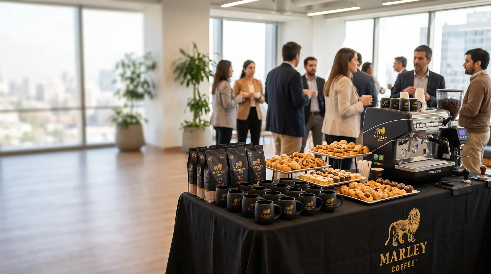
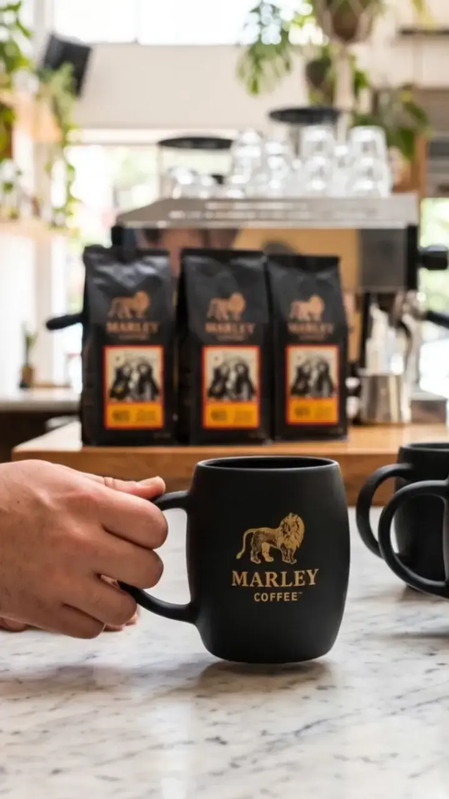

Marley Coffee · EmpresasOficio a la vista · 01/06
Empresas
Coffee break: seis puntos
para organizar el
Evento
Personas, horario, espacio y alcance antes de cotizar.
Desliza →Marley Coffee · EmpresasOficio a la vista · 02/06
Empresas
Antes de definir horario,
confirma la
Anota el inicio, el término y la duración prevista.
Duración
Desliza →Marley Coffee · EmpresasCuentas claras · 03/06
Empresas
Un ejemplo de evento reúne
40
Invitados
- Inicio
- 09:30 h · ejemplo
- Duración
- 30 min · ejemplo
Valores didácticos. No describen un evento, servicio ni capacidad de Marley Coffee.
Desliza →
Marley Coffee · EmpresasOficio a la vista · 04/06
Empresas
Confirma la ubicación
y el
Entrada, mesas y paso libre se revisan con el lugar.
Recorrido
Desliza →Marley Coffee · EmpresasCuentas claras · 05/06
Empresas
Un ejemplo registra
1
Restricción
- Preferencias
- 2 · ejemplo
- Restricciones
- 1 · ejemplo
Valores didácticos. No describen un evento, servicio ni capacidad de Marley Coffee.
Desliza →Marley Coffee · EmpresasOficio a la vista · 06/06
Empresas
Pide el alcance
por
Escrito
Qué incluye, qué se cobra aparte y qué aporta el lugar.
Guarda este post